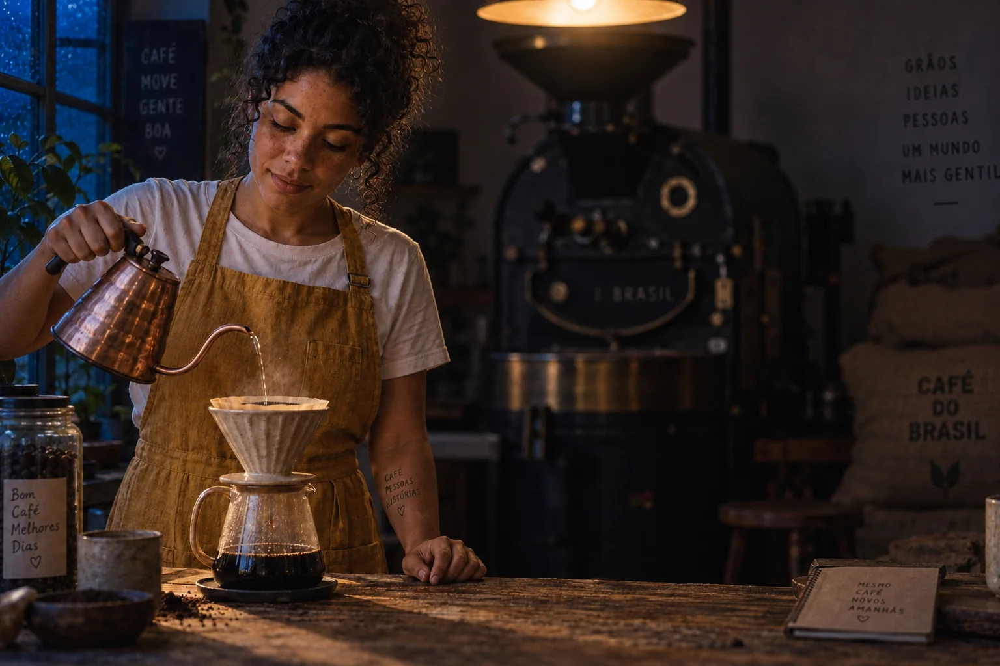

✂️ Edite sem perder o que já funciona
Ao terminar, você escolhe o tipo e o método de edição certos para cada pedido do cliente, escreve instruções com invariantes (“mude só X, mantenha Y”) e revisa o resultado com um checklist antes de entregar.
 Antes: geração aprovada
Antes: geração aprovada
Noite chuvosa: 7000K de fora + pendente 2700KTópicos
O que é
Tratar a primeira geração boa como matéria-prima e chegar ao final por edições, não por novas gerações.
Por que aprender
Cada nova geração sorteia tudo de novo — inclusive o que já estava aprovado.
Conceitos-chave
A imagem-mestre como “negativo”, a versão por etapa e quando regenerar faz sentido.
O que é
Tipos dizem O QUE muda (tudo, uma parte, o quadro, um elemento/fundo); métodos dizem COMO você pede (texto, máscara, referência).
Por que aprender
Nomear o tipo do pedido aponta direto para a ferramenta e o método certos.
Conceitos-chave
A grade tipo × método e onde cada combinação funciona melhor.
O que é
Toda instrução de edição diz o que muda E lista o que deve ficar idêntico.
Por que aprender
Sem invariantes, o modelo interpreta o pedido de forma ampla e mexe onde você não pediu.
Conceitos-chave
A mesma troca de avental com instrução vaga e com invariantes, e o molde da instrução.
Antes: geração aprovadaO que é
Mudar a imagem inteira de uma vez — luz, hora, tempo, gradação de cor, estilo — mantendo cena e pessoas.
Por que aprender
É o jeito mais rápido de tirar variações de uma campanha a partir de uma mesma foto aprovada.
Conceitos-chave
A cena da Lia virada para noite chuvosa e as frases de edição global que funcionam.
Antes: geração aprovadaO que é
Mexer numa região só — um texto, uma mão, um rótulo — com máscara, seleção ou instrução de escopo fechado.
Por que aprender
É o pedido mais comum de cliente, e o que mais sofre quando você regenera.
Conceitos-chave
Rótulo traduzido, cardápio em reais, mão com xícara, e as boas práticas de máscara.
 Base: textos em inglês e 12 OZ
Base: textos em inglês e 12 OZO que é
Substituir o ambiente atrás do sujeito mantendo a pessoa, o primeiro plano e — principalmente — a luz.
Por que aprender
Fundo trocado com luz ou perspectiva diferentes é o jeito mais rápido de uma imagem parecer falsa.
Conceitos-chave
A Lia levada da torrefação para o cafezal e o que conferir depois.
Antes: geração aprovadaO que é
Aumentar a tela e deixar o modelo inventar o que haveria além das bordas, para adaptar a imagem a outro formato.
Por que aprender
Cada plataforma pede um formato; recortar perde conteúdo, expandir ganha.
Conceitos-chave
A cena horizontal virando capa vertical e a tabela de formatos.
Antes: geração aprovadaO que é
Editar uma edição de uma edição acumula pequenas perdas: rosto, textura, cor e nitidez escorregam.
Por que aprender
Três edições pequenas encadeadas podem estragar mais do que uma edição grande feita sobre o original.
Conceitos-chave
Cadeia de 3 edições × as mesmas mudanças numa edição só, e o checklist de revisão.
🛠 Prática guiada
um caso antes/depois pronto para portfólio
🏠 Lição de casa
Case de edição: antes, depois, as versões intermediárias numeradas, as instruções usadas e a nota de fluxo. Vai direto para o portfólio do módulo 4-1.